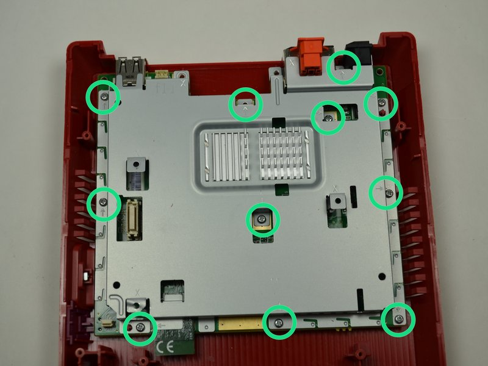
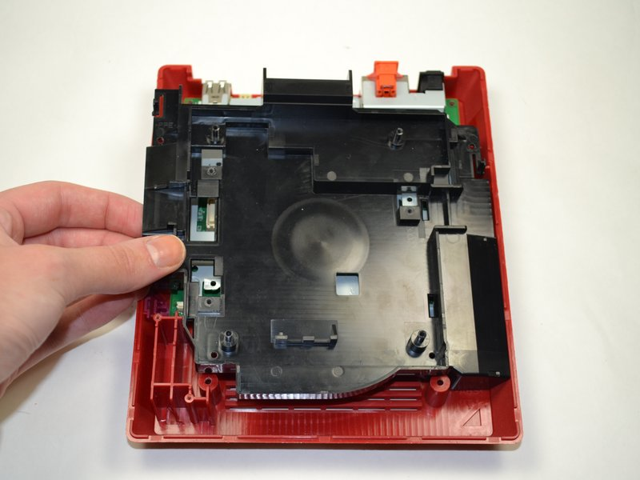
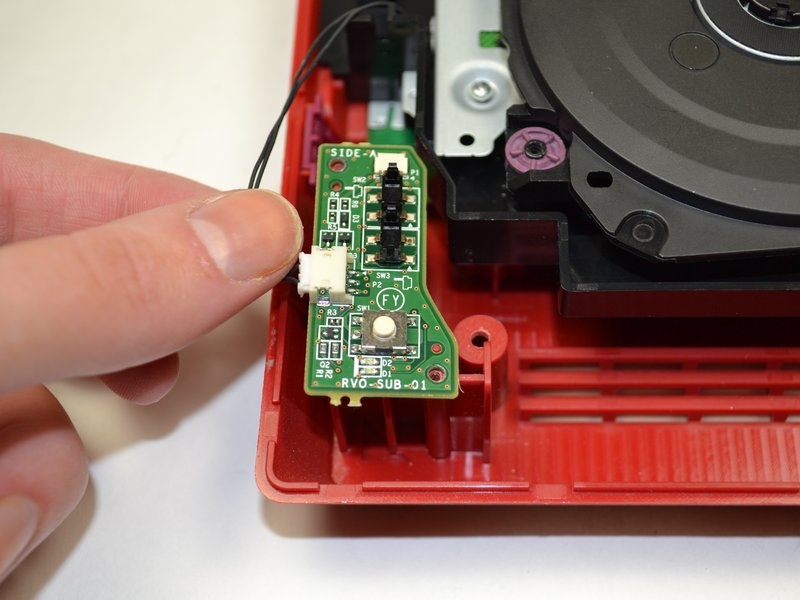
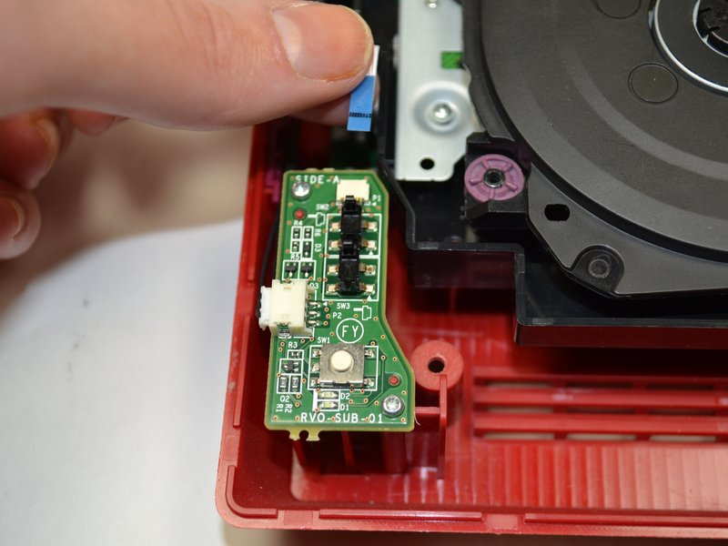
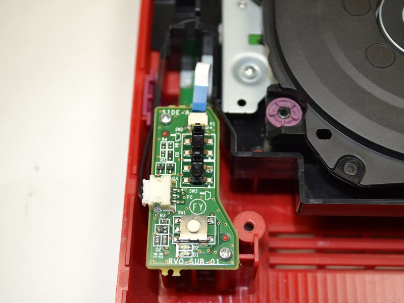
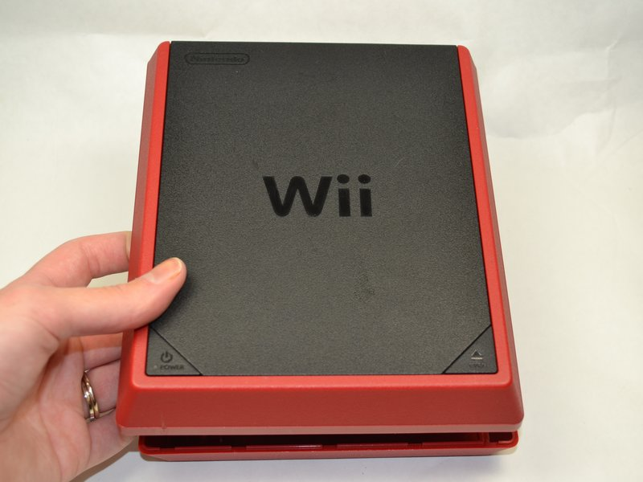

Reassembling the Console
If you were hoping to use the mods you installed, it's probably a good idea to reassemble your console. Note that all parts required should have been in the console prior to disassembling it.
Tools required:
- A Phillips #0 screwdriver
Parts required:
- Wii mini lower case
- Wii mini upper case
- Wii mini metal tray
- 11 metal tray screws
- Wii mini black tray
- Disc drive
- 4 disc drive screws
- Power board
- 2 power board screws
- Wii mini fan
- Fan pin connector
- 2 fan screws
- 4 case screws
- 2 Wii mini feet
1. Install the motherboard


Place the motherboard into the lower case as shown above, and place the metal tray over the metal board.

Screw the screws previously taken from the metal tray into the spots marked above, also marked on your board with arrows.
2. Install the disc drive


Insert the black tray over the metal tray, and slide it inward so that the black squares line up with the metal squares.


Add the disc drive back, and screw in the screws marked above.
3. Install the power board


Place the power board as shown, and connect the pin connector to it. Screw in the marked screws.
 Connect the ribbon cable to the power board.
⚠️ We advise against fiddling with the power board ribbon cable as much as possible as it is rather fragile and trust me, you really don't want that to break.
4. Install the fan


Rotate the console 180o laterally so that the power board is on the far right corner. Insert the pin connector back into the fan, and screw the fan screws in the marked locations.
5. Put the case back together

Push the upper case into the lower case.


Turning the console upside down, screw the final 4 screws into the locations marked above, then add the 2 missing feet.
After reassembling the console
Please note that you may have to set your date and time again from Wii Settings > Calendar or your console may time travel to 20XX (the year of the Nintendo Switch successor release) and you may never see it again.